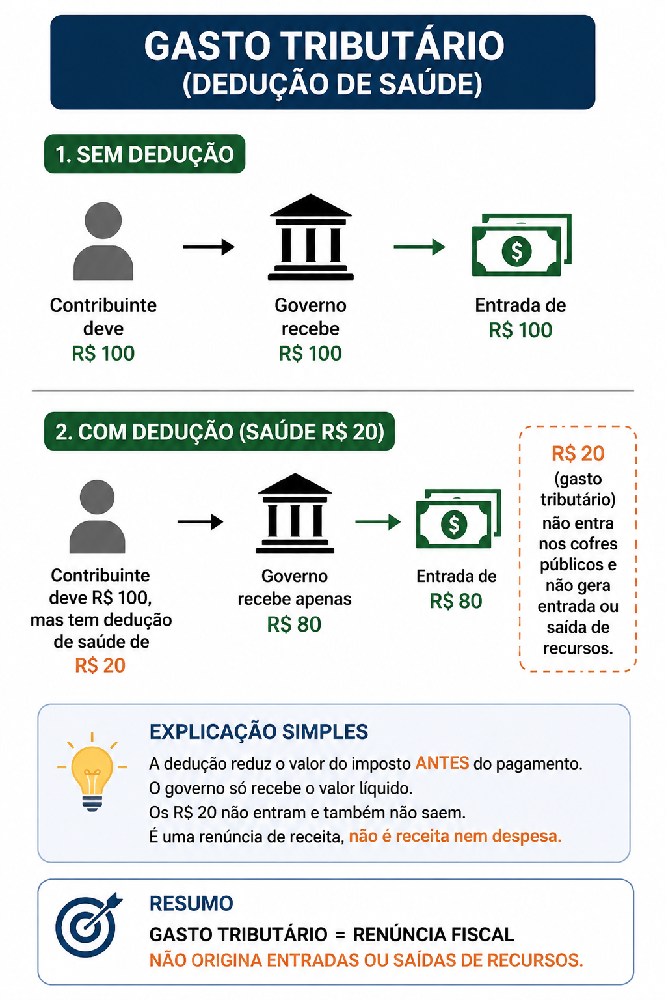

Ano: 2026
Banca: FGV
Órgão: PC-PI
Prova: Perito Criminal - Contabilidade e Economia
Os contribuintes de uma jurisdição têm direito a deduzir os gastos com saúde da base de cálculo da tributação sobre a renda.
De acordo com a NBC TSP 01 - Receita de Transação sem Contraprestação, esses gastos tributários, para o governo tributante,
A) são classificados como ativo e despesa.
B) correspondem a ativo e receita.
C) representam passivo e despesa.
D) configuram receita e despesa.
E) não originam entradas ou saídas de recursos.
Gabarito: Letra E
De acordo com a NBC TSP 01, os gastos tributários são benefícios previstos em lei, como deduções, isenções ou créditos tributários.
No caso da questão, o contribuinte pode deduzir gastos com saúde antes de pagar o imposto.
A grande ideia é: o governo não recebe o valor cheio para depois devolver uma parte.
O valor da dedução simplesmente não entra nos cofres públicos.
Por isso, os gastos tributários não são registrados como:
❌ ativo
❌ passivo
❌ receita
❌ despesa
Eles apenas reduzem o valor que será arrecadado.
Resumo Visual
Exemplo simples:
Se o imposto seria de R$ 100, mas existe uma dedução de saúde de R$ 20, o contribuinte paga apenas R$ 80.
Os R$ 20 não entram e também não saem do governo.

Macete de prova: gasto tributário é renúncia fiscal.
Não gera entrada nem saída de recursos.